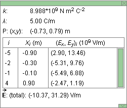

When the Segments toggle button is selected, you can select wire segments by clicking on different parts of the wire. Clicking on a selected segment will deselect the segment. In the image at the top, two segments are selected. Selected segments are shown in red and carry electric charge. Segments that are not selected are shown in grey and carry no charge.
The applet treats the charge on a segment like a point charge at the center of the segment.
If the Segments button is not selected, the applet assumes that there is a uniform charge distribution everywhere on the infinitely extended straight wire. The wire is shown entirely in red when the Segments button is not selected.
The wire is shown entirely in red also when the Segments button is selected and all segments of the wire in the applet window are selected. However, the field vector in this case will be the field vector due to the selected segments only, not that due to an infinitely extended charged wire.
To select several adjoining segments at once, select the Segments button, click with the mouse on one segment and drag along all segments you want to select.

When the Resultant toggle button and the Segments button are selected, the resultant electric field vector at the given field point due to all selected segments will be displayed in green.
If the Segments button is not selected, selecting the Resultant button will display the electric field due to a uniform charge distribution along an infinitely long straight line.
The field point can be moved by clicking on it and dragging it.
When this toggle button is selected, the x and y components of the resultant electric field vector as described under Resultant in Point 2 above will be displayed in pale green.
When this toggle button is selected, the electric field vectors at the given field point due to the selected charged line segments will be shown in red.
The field point can be moved by clicking on it with the mouse and dragging it.
When this button is selected, while the Segments button is selected also, placing the mouse pointer on any of the selected segments will cause the x and y components of the electric field vector due to this segment to be displayed in pale red.

The Grid toggle button will let you display or hide the x, y coordinate grid. The grid defines the directions of the x and y axes.

The Data toggle button lets you display/hide the Data box shown above. The vertical dimensions of the box can be resized by dragging the green rectangle in the lower right-hand corner of the box up or down. The box can be closed by clicking on the little green box marked by an "X" in the upper right-hand corner. The box can be dragged to another location by clicking anywhere else in the box and dragging.
The Data box contains the following information.
- k: universal constant in Coulomb's law
- l: line charge density in C/m
- P: (x,y): coordinates of the draggable field point in m
-
when the Segments button is selected, an insert in the
Data box contains the following information for each
segment:
- i: segment label; negative i for segments to the left of the origin, positive i for segments to the right of the origin
- Xi: x-coordinate of the center of Segment i
-
(Ex,Ex)i
 : components
of the electric field vector at the given field
point due to Segment i; the applet
calculates this elecric field vector as if all
of the charge in the segment were concentrated
at the center of the segment, i.e., at
Xi
: components
of the electric field vector at the given field
point due to Segment i; the applet
calculates this elecric field vector as if all
of the charge in the segment were concentrated
at the center of the segment, i.e., at
Xi
-
 (total): the resultant electric field vector at the
given field point due to all selected segments (if the
Segments button is selected) or due to the infinitely
extended line with uniform charge density
l (if the Segments
button is not selected).
(total): the resultant electric field vector at the
given field point due to all selected segments (if the
Segments button is selected) or due to the infinitely
extended line with uniform charge density
l (if the Segments
button is not selected).

Resets the applet to its default setting.
The slider allows adjusting the line charge on the infinite straight line, or on selected segments, between the values of -10.00 C/m and 10.00 C/m in 0.01-C/m steps.

The slider allows adjusting the length scale of all vector arrows in a range from 1 to 1,000.